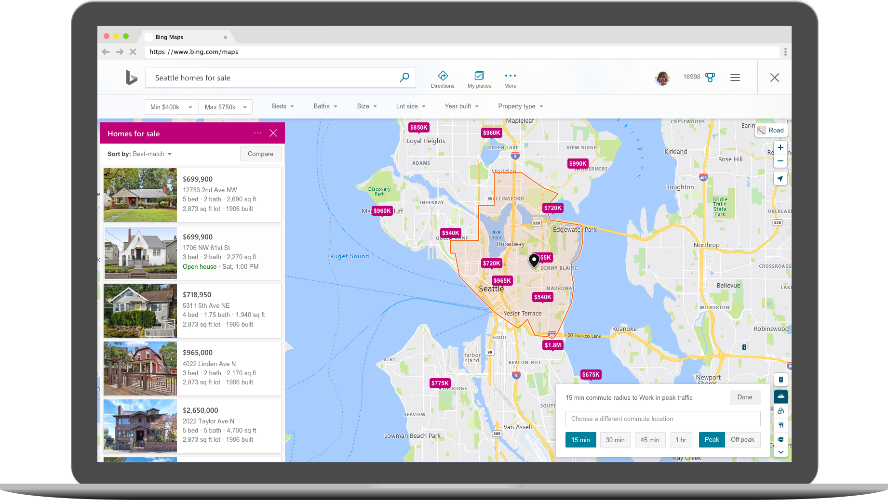
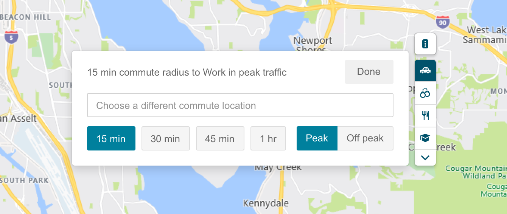

Commutability
Overview
At Bing Maps, we wanted to help people who were in search
of a home and cared about their commute. When shopping for a house, there are many factors that people consider and try to balance: price, beds, baths, nearby ammenities, commute time. Using the OneMap framework, the home-searcher can filter on many of these factors and start using the map to explore homes that are in their ideal location.
One of the ways that Bing Maps helps people find that perfect location
is by showing a commute boundary. A user can select a location that they
frequently visit — their office, their school, their parent’s place — and
let us know how much time they’re willing to spend getting there. Based on
this information we draw a commute boundary on the map and the user can see
which houses fall inside that boundary.

Process
The commutability feature was the first data viz of its kind to be
built for Bing Maps. As a result, in addition to designing the UX and
the map visuals for the feature, I needed to make sure the solution
scaled to future visualizations. This was tricky because of the varying complexities of
the different data viz UX needs. Some just need a legend (i.e. traffic layer) while others
such as the commutability layer need more complex UI to customize the layer.
Another challenge in this project was finding the balance between adding powerful features and keeping the UI easy to use.
Since this is a foreign feature to our users, I erred on the side of simplicity to keep the UI from being intimidating.
An example of where this is reflected in the UI is the decision I made to use an "peak/off peak" toggle versus asking the user
to put in a specific time and date that they want to check commutability for.

Outcome
Designing and building this feature was a successful collaboration with the real estate team and
it also resulted in a framework to build more data viz on Bing maps going forward.